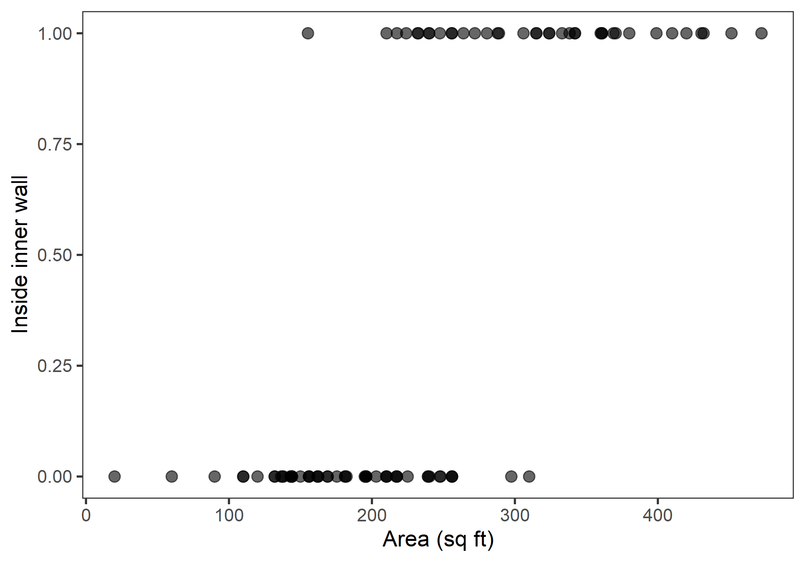
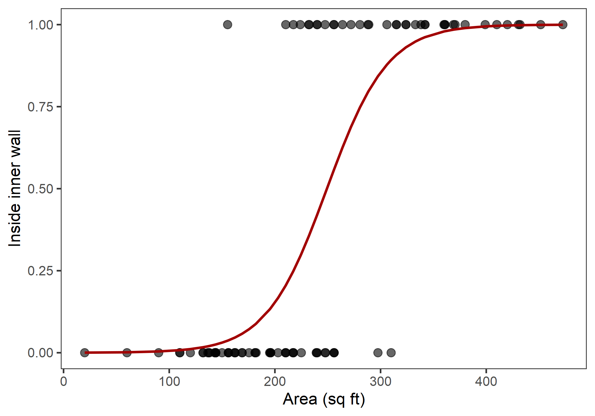
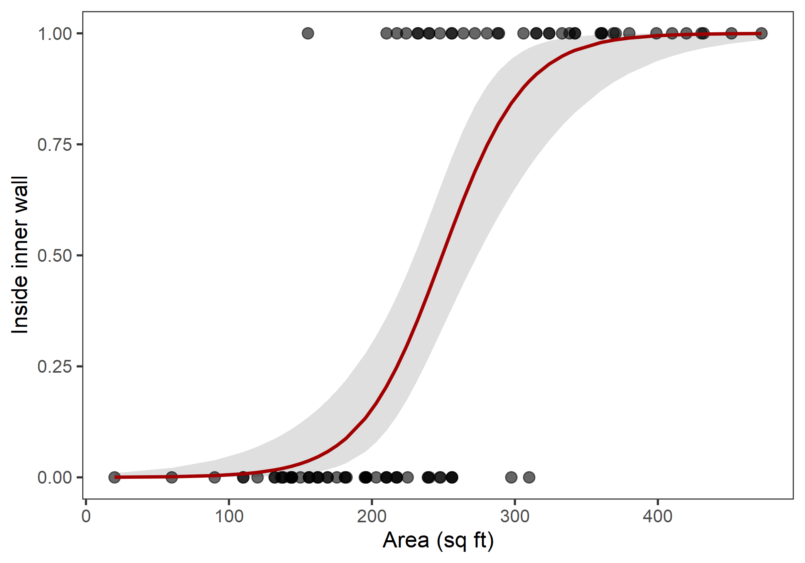
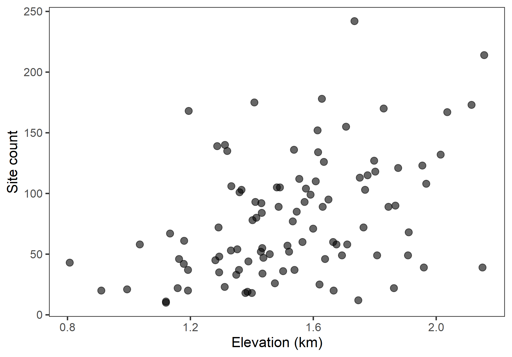
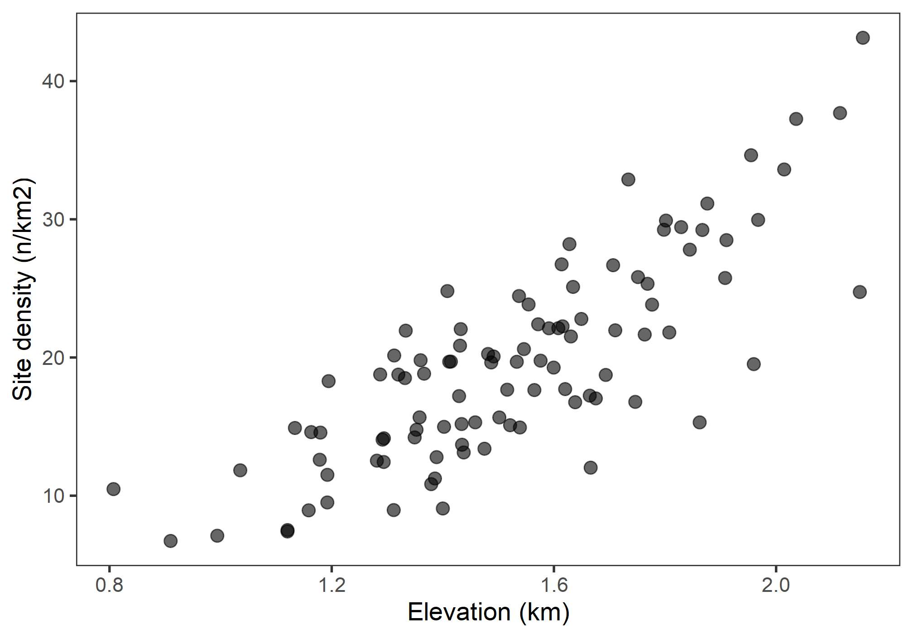

Lab 11
Generalized Linear Models
Outline
TL;DR Extensions to generalized linear models.
Caution! Please note that all labs assume that you are working in an RStudio Project directory!
Objectives
This lab will guide you through the process of
- Predicting with a GLM
- Plotting a bivariate GLM with standard errors
- Fitting a rate model with constant offset
- Testing for dispersion
- Fitting a quasi-Poisson GLM
R Packages
We will be using the following packages:
To install these packages, run the following code in your console:
install.packages(
c("AER", "archdata", "dplyr", "ggplot2", "here")
)Note: You should not install.packages()
in an Rmd document. Use that function in your R console instead. Then
use library() as part of the preamble in your Rmd document
to check packages out of the library and use them in that R session.
This should always go at the start of your document!
library(AER)
library(archdata)
library(dplyr)
library(ggplot2)
library(here)Data
DartPoints- Includes measurements of 91 Archaic dart points recovered during surface surveys at Fort Hood, Texas.
- package:
archdata - reference: https://cran.r-project.org/web/packages/archdata/archdata.pdf
surveys- A hypothetical dataset including counts of grave goods and measures of distance (in meters) from a great house in the American Southwest.
- package: NA
- reference: https://github.com/kbvernon/qaad/tree/master/datasets
Snodgrass- Includes measurements of size, location, and contents of 91 pit houses at the Snodgrass site in Butler County, Missouri.
- package: archdata
- reference: https://cran.r-project.org/web/packages/archdata/archdata.pdf
surveys- A hypothetical dataset including site counts per survey block along with measures of area (in km2) and fit of elevation (in meters) for each survey block.
- package: NA
- reference: https://github.com/kbvernon/qaad/tree/master/datasets
Prediction
In this section, we’ll learn how to predict with a GLM and how to
plot a trend line along with the standard errors. We’ll be using the
Snodgrass data to answer the following
Question Does the size of a house structure (measured in square feet) make it more or less likely that the structure is found inside the inner walls of the site?
We’ve already saved this data to disk, so we’ll load it in again and prepare it for analysis using the same code as in the previous lab.
snodgrass <- here("darts", "snodgrass.csv") %>%
read.csv() %>%
as_tibble() %>%
rename_with(tolower) %>%
select(inside, area) %>%
mutate(
inside = ifelse(inside == "Inside", 1, 0) # read as "if Inside, set to 1, else 0"
)As before, we’ll plot these data using a scatterplot.
ggplot(snodgrass, aes(area, inside)) +
geom_point(
size = 3,
alpha = 0.6
) +
labs(
x = "Area (sq ft)",
y = "Inside inner wall"
)
And, now we’ll fit a GLM with a binomial error distribution and a logit link function:
glm_snodgrass <- glm(
inside ~ area,
family = binomial(link = "logit"),
data = snodgrass
)Here’s the summary again.
summary(glm_snodgrass)
##
## Call:
## glm(formula = inside ~ area, family = binomial(link = "logit"),
## data = snodgrass)
##
## Deviance Residuals:
## Min 1Q Median 3Q Max
## -2.110 -0.481 -0.184 0.288 2.571
##
## Coefficients:
## Estimate Std. Error z value Pr(>|z|)
## (Intercept) -8.66307 1.81844 -4.76 1.9e-06 ***
## area 0.03476 0.00751 4.63 3.7e-06 ***
## ---
## Signif. codes: 0 '***' 0.001 '**' 0.01 '*' 0.05 '.' 0.1 ' ' 1
##
## (Dispersion parameter for binomial family taken to be 1)
##
## Null deviance: 123.669 on 90 degrees of freedom
## Residual deviance: 57.728 on 89 degrees of freedom
## AIC: 61.73
##
## Number of Fisher Scoring iterations: 6To predict with this, we use the predict() function,
just as we did with linear models.
fit <- predict(glm_snodgrass)
# showing the first five fit
fit[1:5]
## 1 2 3 4 5
## -3.658 0.235 1.973 7.031 5.588Note that these are on the logit scale, to get these back onto the
scale of the response (i.e., probability), we need to apply the inverse
link function to these data. To do that, we extract the function from
the error distribution of the model with the family()
function and the $ operator.
inverse_link <- family(glm_snodgrass)$linkinvThis is a function, so we can now apply it to our fit.
inverse_link(fit[1:5])
## 1 2 3 4 5
## 0.0251 0.5586 0.8780 0.9991 0.9963We can use this now to plot the estimated response over our observations.
snodgrass <- snodgrass %>%
mutate(
logit = predict(glm_snodgrass),
probability = inverse_link(logit)
)
# plot
ggplot(snodgrass) +
geom_point(
aes(area, inside),
size = 3,
alpha = 0.6
) +
geom_line(
aes(area, probability),
size = 1,
color = "#A20000"
) +
labs(
x = "Area (sq ft)",
y = "Inside inner wall"
)
To get the standard errors, we can run predict() with
the argument se.fit = TRUE.
estimates <- predict(glm_snodgrass, se.fit = TRUE)
str(estimates)
## List of 3
## $ fit : Named num [1:91] -3.658 0.235 1.973 7.031 ...
## ..- attr(*, "names")= chr [1:91] "1" "2" "3" ...
## $ se.fit : Named num [1:91] 0.78 0.359 0.61 1.639 ...
## ..- attr(*, "names")= chr [1:91] "1" "2" "3" ...
## $ residual.scale: num 1TWo things to note here. First, this is a list with three items:
fit, se.fit, and residual.scale.
The fit is just the estimated response, se.fit
the standard error of predicted means, and residual.scale
the residual standard deviations. The second thing to note is that,
again, the fit and standard error are both on the logit scale, so we
need to apply the inverse link function. Doing that, though, is a little
trickier because we’re working with a list. Here, just to make it as
obvious as possible what we’re doing, I’m going to give you one very
crude, but also very simple method.
snodgrass <- snodgrass %>%
mutate(
logit = estimates$fit,
se = estimates$se.fit,
probability = inverse_link(logit),
conf_hi = inverse_link(logit + 2*se),
conf_lo = inverse_link(logit - 2*se)
)Here, we add the logit response and se or
standard errors to the snodgrass table by extracting the
fit and se.fit items from the
estimates list. We then convert the logit
response to a probability by applying the
inverse_link() function. Next, we estimate the upper
confidence line conf_hi by applying the
inverse_link() to the sum of the logit
response and 2 times the standard error (se). To get the
lower confidence line conf_lo, we do the same, but taking
the difference.
Now we have everything we need to plot the confidence ribbon with
geom_ribbon(). Notice that I add the ribbon to the plot
before adding the observed points and the estimated trend line! This
ensures that points and line are not obscured by the confidence
ribbon.
ggplot(snodgrass) +
geom_ribbon(
aes(area, ymin = conf_lo, ymax = conf_hi),
alpha = 0.5,
fill = "gray75"
) +
geom_point(
aes(area, inside),
size = 3,
alpha = 0.6
) +
geom_line(
aes(area, probability),
size = 1,
color = "#A20000"
) +
labs(
x = "Area (sq ft)",
y = "Inside inner wall"
)
Exercises
For these exercises, we’ll use the modified version of the
DartPoints dataset from the archdata package
that we created in the previous lab. We are going to use length to see
if we can discriminate Pedernales dart points from the other dart
points.
- First, load the data in with
read.csv()andhere(). Be sure to call this tabledarts. - Make a scatter plot of the data.
- Build a GLM of the Pedernales type as a function of dart length using a Binomial distribution and the logit link.
- Use
predict()withse.fit = TRUEand assign this to an object calledestimates. - Extract the inverse link function from the model with
family()$linkinvand give it the nameinverse_link. - Now, add the logit, probability, standard errors, and
inverse-transformed standard errors to the
dartstable, applying the inverse link function where necessary. - Plot the confidence ribbon. Make sure to add the ribbon to the plot before adding observations or the trend line!
Rate Model
In this section, we’ll learn how to create a rate model using a
Poisson GLM with a a log offset to account for differences in the size
of the sampling interval. Here, we’ll be using the surveys
data to answer the following
Question Does elevation drive variation in the number of archaeological sites per survey block?
So, first, we’ll load in the data. This time, we’ll have to download the data, then load it into R.
download.file(
"https://raw.githubusercontent.com/kbvernon/qaad/master/datasets/surveys.csv",
destfile = here("data", "surveys.csv")
)
surveys <- here("data", "surveys.csv") %>%
read.csv() %>%
as_tibble()
surveys## # A tibble: 100 x 4
## block sites area elevation
## <dbl> <dbl> <dbl> <dbl>
## 1 1 53 2.86 1.33
## 2 2 92 4.41 1.43
## 3 3 108 3.61 1.97
## 4 4 52 3.44 1.52
## 5 5 37 2.48 1.54
## 6 6 132 3.93 2.01
## 7 7 46 2.74 1.64
## 8 8 10 1.33 1.12
## 9 9 48 3.39 1.29
## 10 10 103 5.47 1.37
## # ... with 90 more rowsAs before, we’ll plot these data using a scatterplot.
ggplot(surveys, aes(elevation, sites)) +
geom_point(
size = 3,
alpha = 0.6
) +
labs(
x = "Elevation (km)",
y = "Site count"
)
Now, let’s look at differences in the area of each survey block.
ggplot(surveys, aes(area)) +
geom_histogram(bins = 15) +
labs(
x = "Area (km2)",
y = "Number of survey blocks"
)
As you can see, the size of each survey block is not the same. This is not good! For the size biases the count: bigger areas should just by being bigger have more sites and smaller areas less sites just as a matter of chance. To account for this, we need to weight the response by the area.
ggplot(surveys, aes(elevation, sites/area)) +
geom_point(
size = 3,
alpha = 0.6
) +
labs(
x = "Elevation (km)",
y = "Site density (n/km2)"
)
Exercises
For these exercises, we’ll use the site_counts dataset.
We are going to use elevation to predict site counts per kilometer on an
east-west transect through Utah.
- First, download the
site_countsdata with
download.file(
"https://raw.githubusercontent.com/kbvernon/qaad/master/datasets/site_counts.csv",
destfile = here("data", "site_counts.csv")
)- Make a scatter plot of the data.
- Build a GLM of site counts per kilometer as a function of elevation using a Poisson distribution and a log link.
- Build an intercept-only GLM of site counts using the same distribution and link.
- Compare the AIC of these two models.
- Is the AIC of the proposed model less than or greater than the AIC of the intercept-only model?
- Now compare these models using a Likelihood Ratio Test with
anova()andtest = "LRT".- What is the result? Is there a significant improvement?
Homework
No homework this week!